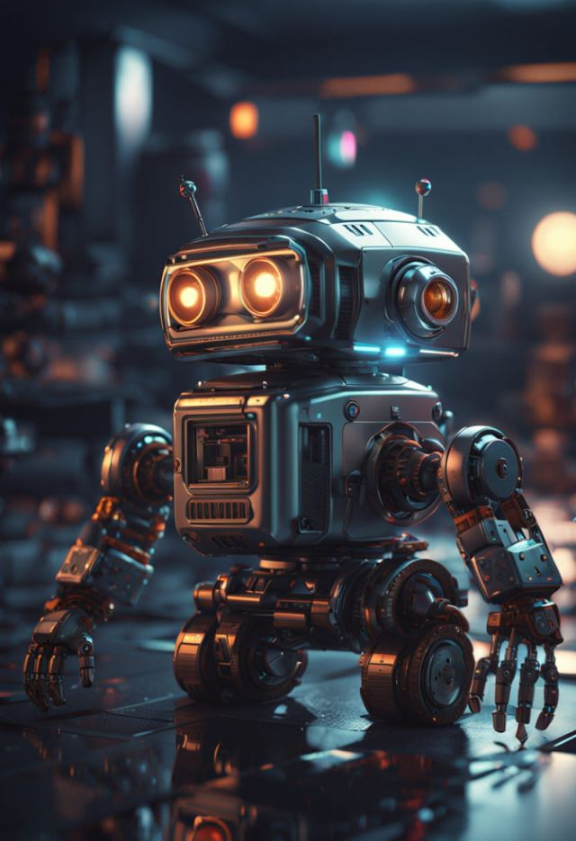
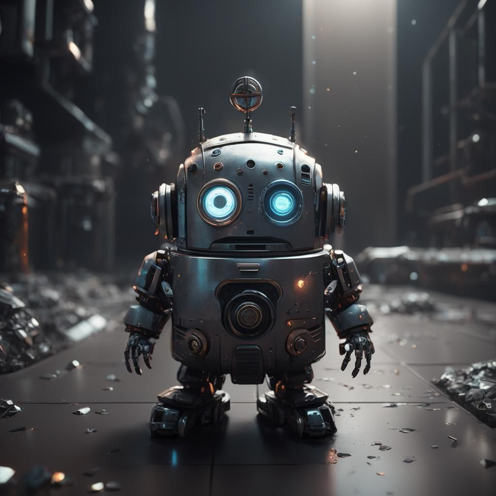

Neon Sentinel
A lone robot stands guard in a decaying alley, surrounded by neon lights and urban shadows.

Little Wanderer
A small repair unit navigates a docking bay of a satellite station. Its autonomy and gentle demeanor reflect the new generation of adaptive machines.

Little Wanderer
Among gears and dreams, a tiny robot moves with the sweetness of a lost pup.

Mechanical Heart
Created to serve, forgotten by time—now it wanders through a broken world, driven not by programming, but by something resembling longing.

Silent Orbit
Deep within a space station, a solitary figure works, wrapped in the quiet hum of surrounding technology.

Fusion of Human and Machine
In a world where metal has replaced flesh, she still carries a human gaze.